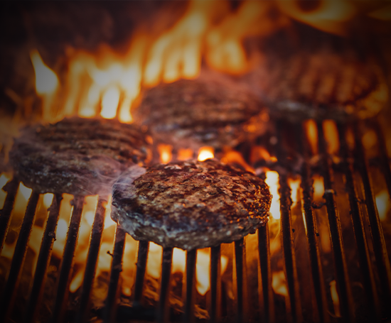
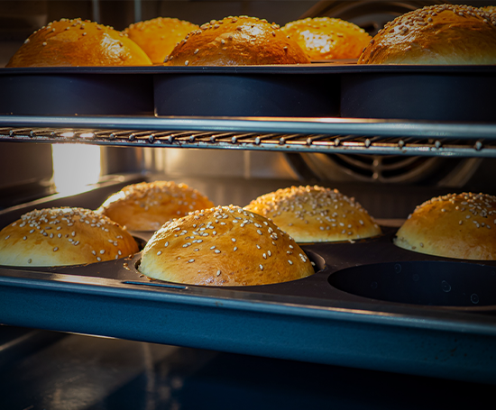

CONCEPT
WHAT'S MISTER BURGER ?
“MISTER BURGER” それは、店主が、アメリカ・カリフォルニア州で生活していた頃の呼び名です。
お肉本来の美味しさが味わえる本場のシンプルなハンバーガーを、オンリーワンの和牛でお客様に体験していただきたい…
そんな想いから「MISTER BURGER」は誕生しました。

最高級黒毛和牛パティ
MISTER BURGERが厳選した黒毛和牛100%のパテ.
荒目に引いたお肉は、ジューシーで味わい深い仕上がり。
and cooked right when you order.
It’s hot and deliciously juicy and full of flavor.
100%国産野菜
日本全国より、厳選した安心、安全のフレッシュな
国産野菜を使用しています。（アボガドを除く）
carefully selected from all over Japan (except avocado).

特注バンズ
バンズはバター100%使用。
やや硬めに焼いて、香ばしさと独特の食感に。
Nicely toasted and crispy on the outside.
ENJOY MISTER BURGER !
ハンバーガーに最も重要なのはバランスです。
『お口の中で完成する料理』という発想の基、数えきれない試行錯誤と改良を重ねています。
各具材ともこだわり抜いた最高のものを使用しておりますが、主役はパティでもバンズでもトッピングでもなく、
あくまで『ハンバーガー』。創業以来追求し続けている、味の黄金比をお楽しみ下さい。